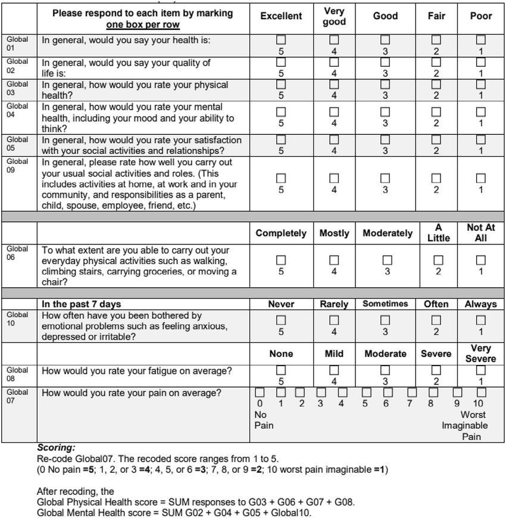

Project Background
Increasingly, hospitals are being mandated to monitor patient wellbeing post-treatment through Patient Reported Outcome Measures (PROMs). These are typically collected using questionnaires designed to receive subjective responses from patients to give a measure of the patient’s sense of health and wellbeing. The questionnaires are often distributed in paper form, which dramatically increases the time that it takes to collect and analyse (given the questionnaires are mailed to the houses of the patients) and ultimately, the process of collecting and analysing the responses to these questionnaires can take up to a year to finalize (Background information about PROMs - NHS Digital, 2021).

This problem doesn’t just exist in the clinic - it also exists in the classroom. The principles of PROMs are also directly applicable to teaching, for example: considering topic evaluation worksheets, module evaluation questionnaires and student feedback forms. Responses to these questionnaires can also provide vital feedback to educators in addition to clinicians, and operate on the same general principles. Yet in most classrooms across schools in Wales, these feedback forms are still distributed and collected using pen and paper despite the technology available to perform the same task digitally.
Our client, Dr Joseph Connor (NHS) has taken an active interest in resolving both of the issues defined above.
Project Goals
The objectives of this project were to produce a general web app capable of gathering PROMs data per individuals, allowing clinicians to understand the factors that help and hinder an individual from adherence to set treatment plans in the clinic and the equivalent data in the classroom. If developed, the solution would significantly speed the time taken to create, collate, distribute and analyse responses to questionnaires in both clinical and classroom settings and prove immensely useful in both contexts.
Gathering Requirements
We identified our users by interviewing our client, who referred us to KS2 teachers (who in turn, referred us to KS2 students). Throughout this process, we sought a description of the environment where the problem was occurring using semi-structured interviews (Blandford, 2013) with open-ended questions – allowing us to probe further when needed. Examples of questions included:
Questions to teachers (answered by pseudo-users):
What is the greatest pain point during the process of collecting PROMs?
Distributing PROMs is okay. We have loads of PROM resources internally which allows me to find the ones that I need quickly. The pain point is really the amount of time that it takes to extract useful information from the responses that we get. We submit the questionnaires to patients not expecting to see the outcomes of it until a year from now, which I think really doesn’t need to be the case.
What do you think is the solution to this problem?
I’m honestly not quite sure why we still mail these instead of using a website or something instead. I think it’d be much faster if we could send them all online, and then get their responses as soon as they’ve completed them, not until every single person has been chased up for a year to respond.
Who would be the potential users of this solution, other than yourself?
The patients, so that they can answer questions.
What format do you think would be most suitable for the final solution (e.g., mobile application, web application, wearable device)?
Not a wearable device. These forms can be quite big sometimes, so I think they’d need something bigger than a phone to see it on, so a web app sounds best as far as I see it. It would be great if they could respond to this on their phone too though, in case they don’t have a computer.
Where would this solution (mainly) be used?
I’ll be using it at my desk most of the time. I presume the patients will probably be using it at home.
When would this system be used?
Every few days for me. Potentially more often for my colleagues. Ours normally go out in batches, so it’d really be used either when we get a response back or when we’re sending a batch out.
Personas
After interviewing our users, we created personas to represent the motivations and desires of the user (Nielsen, 2009). Doing this allows us to make the users more understandable and challenge our assumptions (Dam and Teo, 2020) about the user. We also created scenarios based on the interviews with our users to better understand the context of use, and to assist to evaluate the efficacy of our designs later.
Use Cases
MoSCoW Requirements
| Requirement | Type |
|---|---|
| Surveyors can collect feedback from respondents. | Functional |
| Surveyors can set tasks containing qualitative and quantitative responses. | Functional |
| System is accessible via a web-browser. | Functional |
| Surveyors must be able to see individual Responses to a task. | Functional |
| Surveyors must be able to create and manage groups of Respondents that they can assign tasks to collectively. | Non-functional |
| The ability to score and rank Respondents by the responses that they generate on a league table. | Non-functional |
| Respondent should be able to see the tasks that they have been assigned to complete. | Non-functional |
| Requirement | Type |
|---|---|
| Summary visualisations for groups. | Functional |
| Create and reuse Task templates. | Functional |
| Responsive to different display sizes. | Functional |
| Visualisations for the breakdown of responses to a question. | Non-functional |
| Requirement | Type |
|---|---|
| Attach links to questions and track number of link clicks for each question. | Functional |
| Word clouds to visualise text responses. | Non-functional |
| Modify the way that a question is scored. | Non-functional |
| Dedicated page for visualising group progress over time. | Non-functional |
| Requirement | Type |
|---|---|
| Feedback forms will not contain any task-specific content and should only be used as a mechanism to gather feedback. | Functional |
References
NHS Digital. 2021. Background information about PROMs - NHS Digital. [online] Available at: https://digital.nhs.uk/data-and-information/data-tools-and-services/data-services/patient-reported-outcome-measures-proms/background-information-about-proms [Accessed 17 November 2020].
Kovacevic, D., 2018. Patient Reported Outcome Measure (PROM) feedback form.. [image] Available at: https://www.researchgate.net/profile/David-Kovacevic/publication/326524497/figure/fig1/AS:652804830011402@1532652208322/Patient-Reported-Outcomes-Measurement-Information-System-PROMIS-Global-10-form.png [Accessed 21 March 2021].
{kind=link}
Nielsen, L. (2009). Personas. [online] The Interaction Design Foundation. Available at: https://www.interaction-design.org/literature/book/the-encyclopedia-of-human-computer-interaction-2nd-ed/personas. [Accessed 8 November 2020]
Dam, R.F. and Teo, Y.S. (2020). Learn How to Use the Best Ideation Methods: Challenge Assumptions. [online] The Interaction Design Foundation. Available at: https://www.interaction-design.org/literature/article/learn-how-to-use-the-best-ideation-methods-challenge-assumptions. [Accessed 8 November 2020]